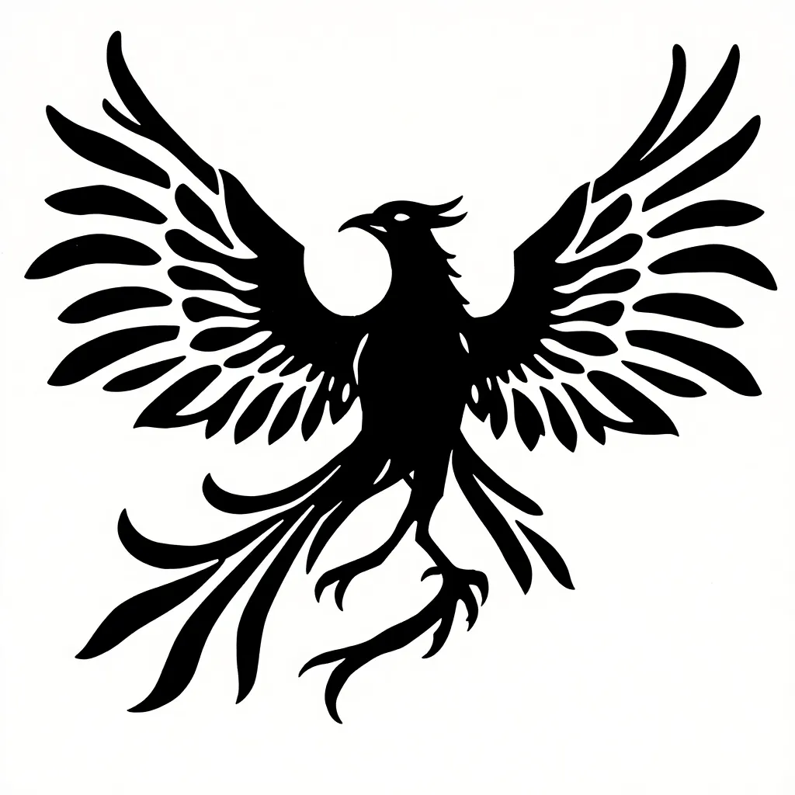
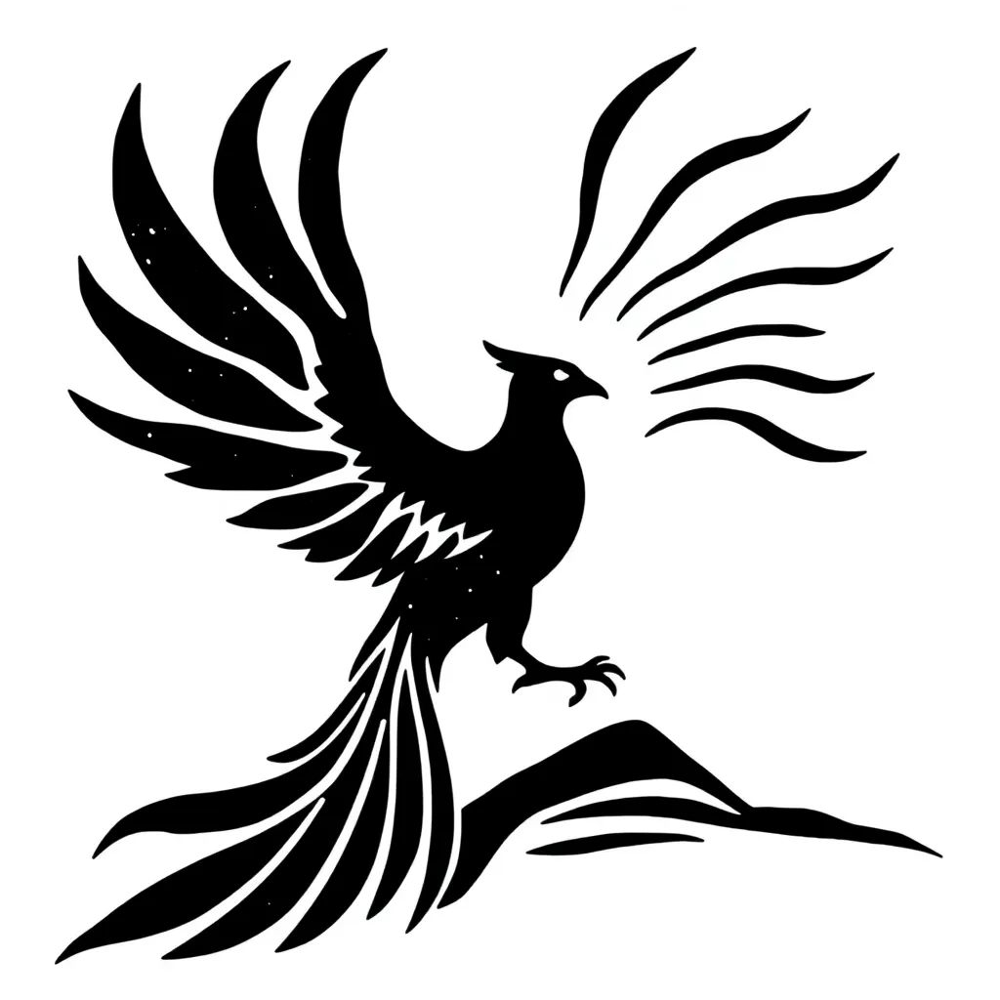
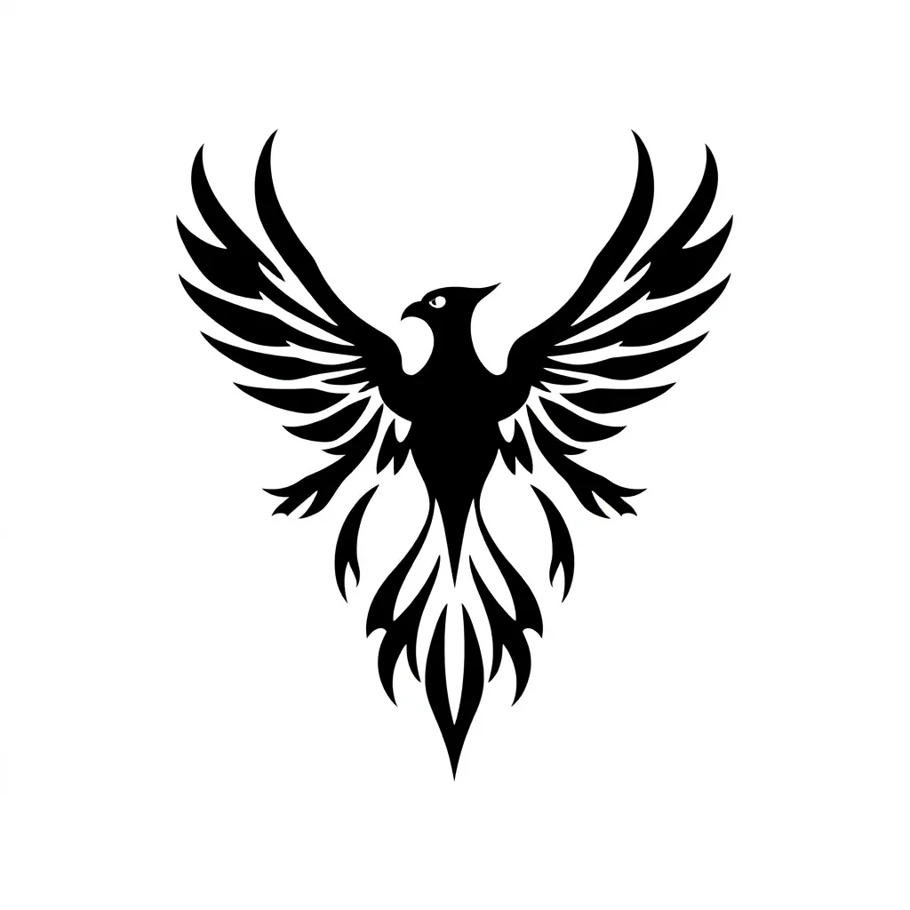

Intersectional Uprising — Logo Design / Phoenix Mark / March 2026
Concept 01 — Wide wing / full spread

The mark
A phoenix in full ascent, wings spread wide, rendered in bold woodcut silhouette.
The meaning
Broad reach. Nationwide. The full wingspan references the chapter structure — many cities, one movement, one sky.
The decision
The wide stance risks losing legibility at small sizes. Works best at large scale — banners, placards, print. The boldness of the woodcut line is the strength here.
Concept 02 — Converging strands / intersectional wing

The mark
A phoenix whose wing feathers are rendered as distinct strands — lines that cross and converge before rising.
The meaning
Intersectionality made visible. Multiple lines, different origins, meeting at a single point and ascending together. The wing structure carries the name.
The decision
The most conceptually complete of the three — both the phoenix and the intersectional idea are present in a single mark. The risk is whether the strand detail survives reduction.
Concept 03 — Reduced silhouette / pure form

The mark
A phoenix reduced to its most essential silhouette — no internal detail, pure shape, maximum contrast.
The meaning
The boldest option. Scales to any size. Survives photocopying, embroidery, a rubber stamp. The phoenix reads instantly because it has been stripped to its recognisable outline only.
The decision
The simplest mark is often the most durable. The risk here is the opposite of concept 02 — it may be too generic. A phoenix silhouette without the intersecting strands doesn't carry the full brief.